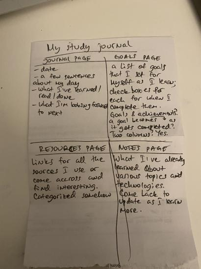
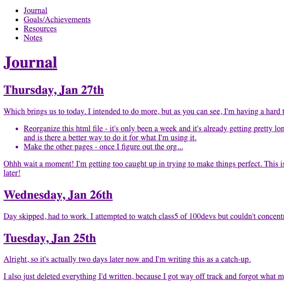
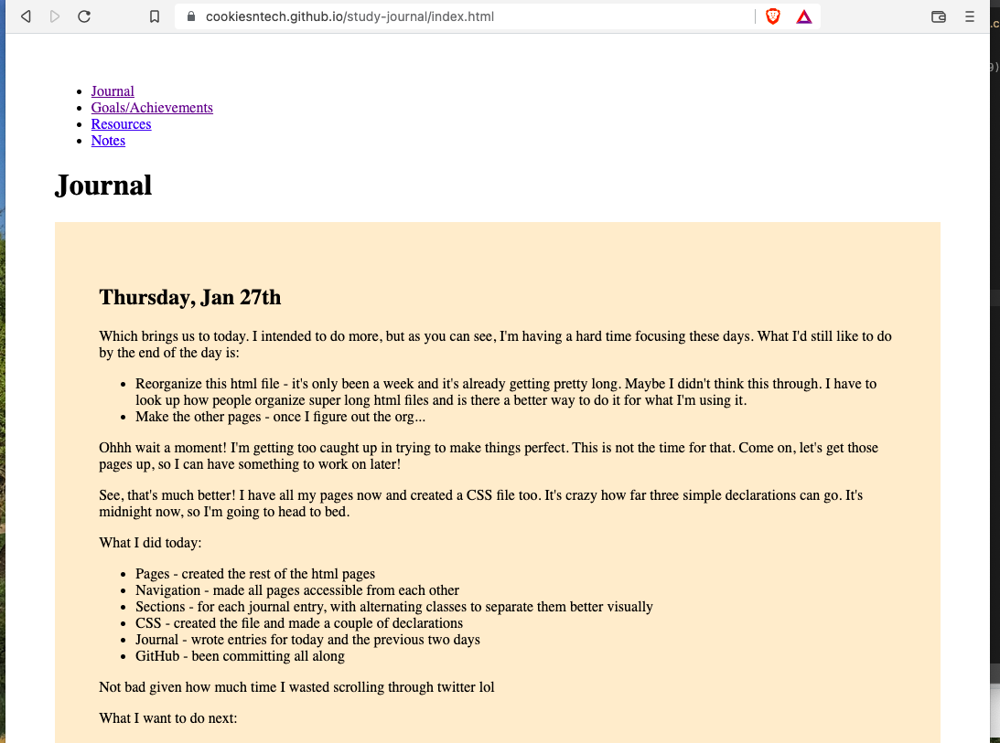
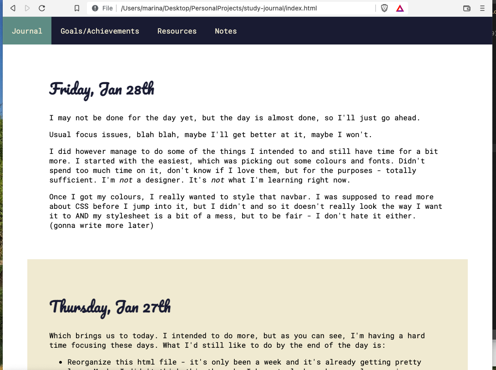
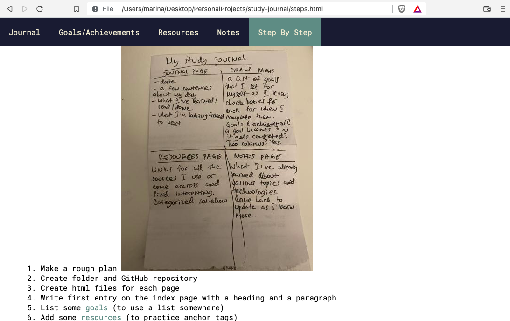
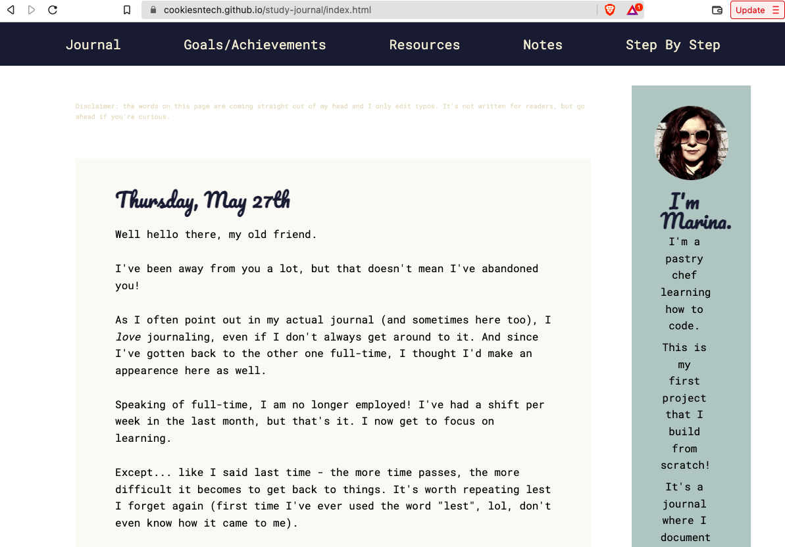
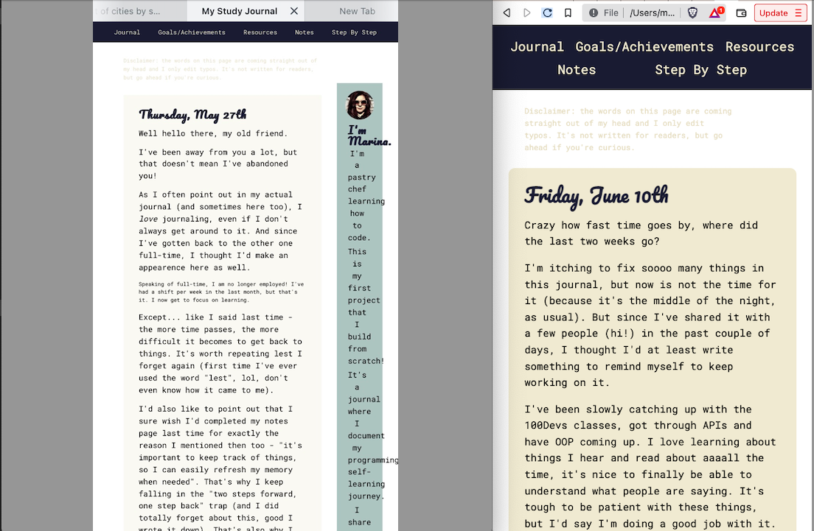

Watch out for hidden images...
This project, step by step
I go around recommending people to do it too, but I know how hard it can be to get started.
That's why I'm making this page, documenting all the small steps I take to put it together (because who wants to read them as git commits...).
Plus, I would love to see how many I end up with by the time I start feeling like there's not much else I can do.
-
Make a rough plan, no need to overthink (image)
 - Create folder and GitHub repository;
- Create html files for each page;
- Write first entry on the index page with a heading and a paragraph;
- List some goals (to use a list somewhere);
- Add some resources (to practice anchor tags);
- Add headings for each category of things I've learned on the notes page;
-
links to each page to access the others (image)
 - Close all anchor tags;
- Create css file;
- Get the text away from the edges of the page;
- Create sections for each day's entry;
-
Use alternating background to separate them visually (image)
 - Choose a color palette and comment it on top of the css file;
- Choose fonts and link them in the heads of all html files (yep, I did think it would work if I only put it in index.html);
- Apply fonts and colors to the relevant elements;
-
Style the navigation bar:
 - Check all files for errors on W3C;
- Fix errors;
- Add target="_blank" to every single link. YESSSS!
- Make step-by-step page;
- List all the steps I've taken so far;
- Add some images to illustrate those steps (and to practice adding images);
-
Figure out how to make them expandable/drop down/anything that's better than their current state; this is where I'm at at the time of writing this list, will add next steps as they come (image)
 - Make a decent looking sidebar with a photo, short info and social media icons;
-
Take it too far with the CSS and have no idea how to go back (image)
 - Add an embarassingly small amount of notes and resources;
- Fidget with the navbar's buttons size and spacing and break the hover out of nowhere;
- Implement img width and wonder how it never occurred to you before (it's been three months!);
- Break the sidebar icons unknowingly before even fixing the rest of it or the navbar;
- Embed first video ever!
- Add image to step 26;
- Move all media files to a media folder (yes, I did not have one until now);
- Edit all media links to add media folder;
- Realize what went wrong on step 30;
- Add class to icons to adjust size;
- Figure out the other main sidebar issue;
- Remove currently unnecessary article tag from index sidebar;
- Update sidebar text so that it's the same on all pages;
- Adjust sidebar margins and padding;
- Add border radius to sections and articles to soften the edges a bit;
-
Finally add some much needed media queries (image)
 - Repeat step 39 due to some unnoticed changes;
- Make a footer just because;
- Stick the navbar to its position;
- Add padding to anchor tags in navbar to get the hover background right;
- Spend a couple of hours trying to toggle things with js & divs;
- Go back to step 42 to make media queries functional for resizing of window AND for physically smaller screens;
- Discover <details> tag by inspecting the MDN side menu and ditch step 47;
- Go nuts with <details> and add it to pretty much every section and article;